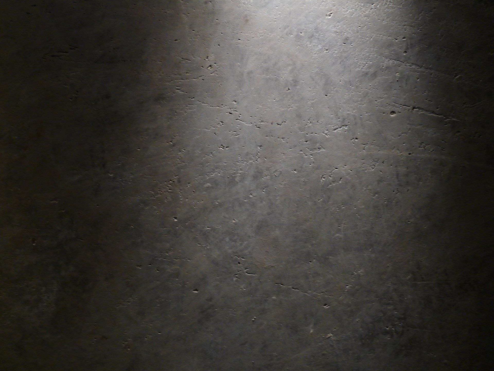

Kreative Wandgestaltung
Kalkputz, Marmorputz, Lasuren und Spachteltechniken mit Tiefe, Struktur und individuell gemischten Farbtönen.
Malerfachbetrieb in Düsseldorf
Farbe, Kalk und handwerkliche Präzision. Wir gestalten Wände, die Ihrem Raum eine unverwechselbare Haltung geben.

Leistungen
Von der ersten Materialprobe bis zum letzten sauberen Abschluss entwickeln wir Räume, die zu den Menschen darin passen.

Kalkputz, Marmorputz, Lasuren und Spachteltechniken mit Tiefe, Struktur und individuell gemischten Farbtönen.
Renovierungsanstriche, Fassaden, Treppenhäuser, Decken und Tapeten. Präzise ausgeführt und sauber übergeben.
Riss- und Putzsanierung, Feuchtigkeits- und Schimmelschäden sowie schützende Beschichtungen für belastete Flächen.
Aus- und Einräumen, staubarmes Arbeiten und Renovierung während Ihres Urlaubs, am Wochenende oder an Feiertagen.

Material mit Wirkung
„Eine Wand ist nie nur Hintergrund. Sie verändert, wie ein Raum sich anfühlt.“Kalk nimmt Feuchtigkeit auf, wirkt alkalisch und schafft ein gesundes Raumklima.
Ausgewählte Arbeiten
Jede Oberfläche reagiert anders auf Licht, Raum und Material. Diese Projekte zeigen einen Ausschnitt unserer Möglichkeiten.
Unsere Haltung
Gute Räume beginnen mit einer genauen Frage: Wie möchten Sie sich hier fühlen?
Daniel Rudek verbindet ausgeprägten Sinn für Gestaltung mit fast vergessenen Handwerkstechniken und ökologisch sinnvollen Materialien. Farben werden nicht aus einem Katalog gewählt, sondern auf Licht, Architektur und Nutzung abgestimmt.
Das Ergebnis soll nicht nach Trend aussehen. Es soll sich anfühlen, als hätte es schon immer zu diesem Raum gehört.

So entsteht Ihr Raum
Wir hören zu, betrachten Licht und Architektur und klären, was der Raum leisten soll.
Sie erhalten eine klare Empfehlung. Bei besonderen Techniken entwickeln wir Musterflächen.
Wir schützen, bereiten vor und arbeiten präzise. Staub und Unordnung bleiben so gering wie möglich.
Der Raum wird fertig und sauber übergeben. Sie sehen nicht den Aufwand, sondern das Ergebnis.
Gut zu wissen
Wir übernehmen klassische Malerarbeiten, kreative Wand- und Deckengestaltung, Tapeten, Kalk- und Marmorputze, Lasuren sowie Riss-, Putz- und Schimmelsanierung.
Ja. Für individuelle Farbkonzepte und besondere Techniken können Musterflächen entwickelt werden. So entscheiden Sie anhand von Material und Lichtwirkung.
Ja. Eine Urlaubsrenovierung mit Aus- und Einräumservice gehört zum Angebot. Der genaue Ablauf wird vorab gemeinsam festgelegt.
Wochenend- und Feiertagsrenovierungen sind besonders für Büros, Praxen und Lokale möglich. Termine stimmen wir individuell ab.
Rufen Sie unter 0162 9353172 an. Montag bis Donnerstag erreichen Sie uns von 8 bis 18 Uhr, freitags von 8 bis 14 Uhr.
Ihr Raum. Der nächste Schritt.
Beschreiben Sie kurz Ihr Vorhaben oder rufen Sie direkt an. Wir klären gemeinsam, welche Technik und welcher Ablauf zu Ihrem Raum passen.
0162 9353172Mo bis Do: 8:00 bis 18:00
Fr: 8:00 bis 14:00